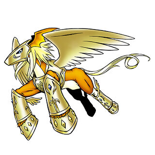
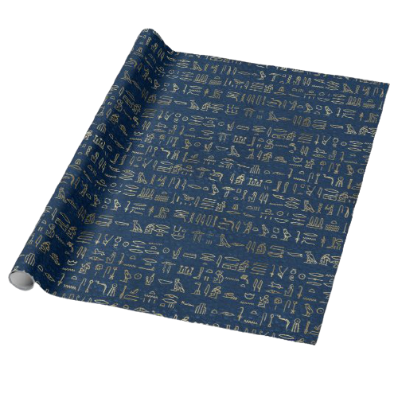
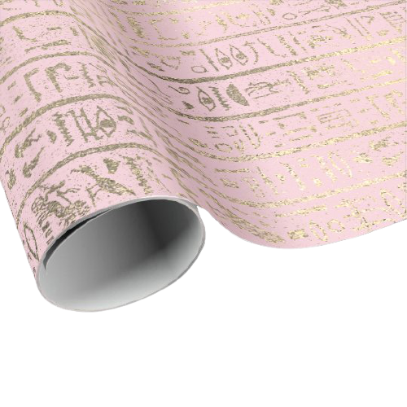

Você chegou na Native Floreste e encontrou o digiovo sagrado junto com Tailmon. Patamon evolui então para Pegasusmon. Tailmon conta que existe uma pista sobre Argomon no deserto. Você decide partir junto com Pegasusmon. No deserto você encontra dois pergaminhos em uma língua antiga, um azul e um rosa. Você não sabe o que aqueles escritos significam. Qual você escolhe?

